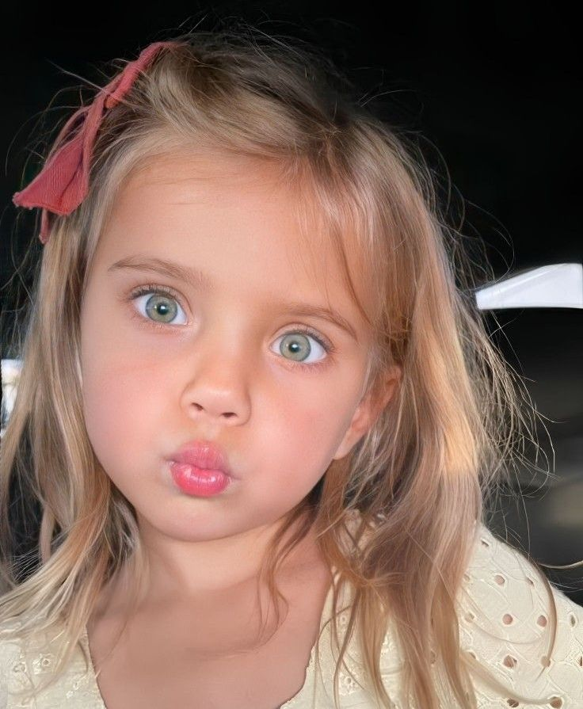
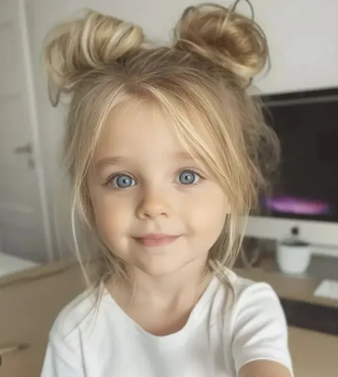
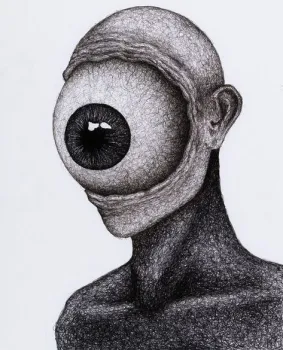
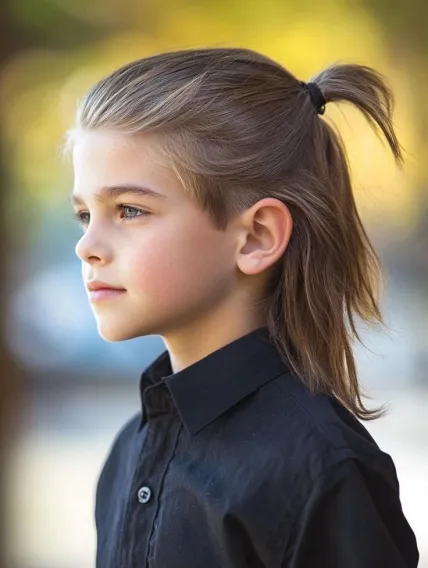
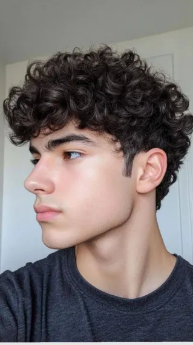
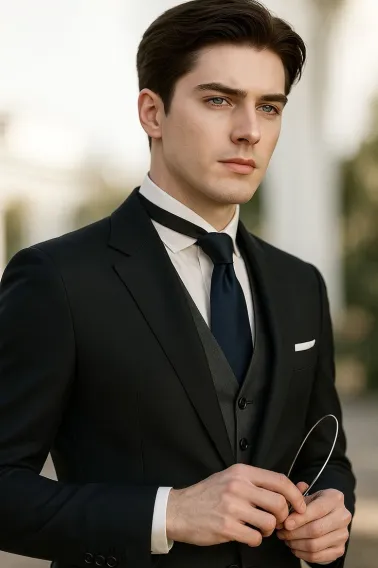
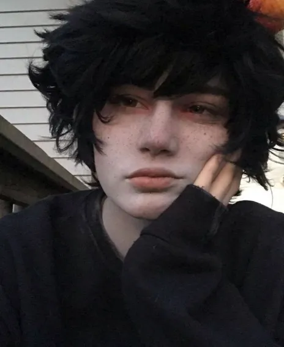
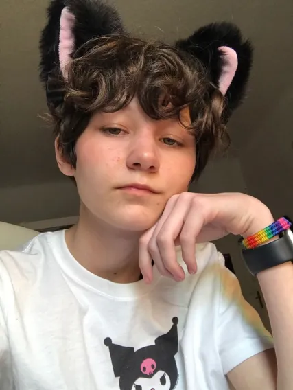
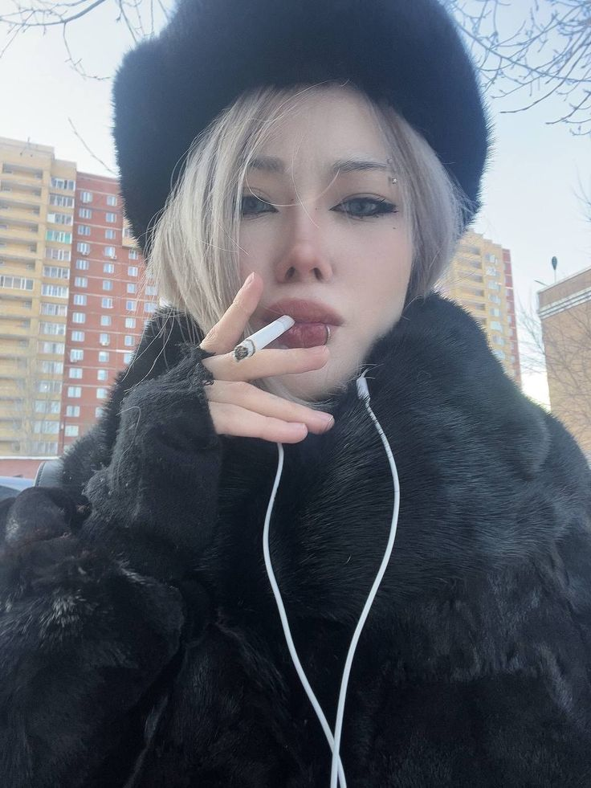

Aurora

Pronombres:She/Snow -a -i -u -e
Apodos: Snow o Nieves
Edad: Entre 8 y 10 años
Verbality: Verbal
Identidad: Chica cis
Orientación: Asexual (aun no sabe bien)
Roles: Trauma holder y ansiedad holder
Introyecto: Si, de disney y una cantante
llamada igual
Likes: Nereidas, nayades, colorear, animal
crossing, barbies,
Disney, Alicia en el pais de las maravillas,
stardew valley y los conejos
Dislikes: Sonidos fuertes, sentir que esta
molestando
Beth

Pronombres: She/fairy -a
Apodos: N/A
Edad: 2
Verbality: Semi verbal
Identidad: Chica cis
Orientación: (No se sabe)
Roles: Trauma holder
Introyecto: Si, de disney
Likes: (no se sabe bien) hadas y hurones
Dislikes: (No se sabe bien) que no la entiendan
Ciclople

Pronombres: Shy/cyclo/it -
Apodos: Asgarbard
Edad: 16
Verbality: Verbal
Identidad: Sin identidad definida / agenero
Orientación: Sin orientación definida / asexual
Roles: Trauma holder y ansiedad social holder
Introyecto: Si, de Percy Jackson
Likes: (ni idea)
Dislike: Gatos
Kai

Pronombres: He/it -o -i -u -oa -e
Apodos: Ninguno
Edad: Entre 5 y 7
Verbality: Semi verbal
Identidad: Chico cis
Orientación: Irrelevante
Roles: Age regression
Introyecto: Si, de un personaje de gta roleplay
Likes: Leones
Dislikes: (no se sabe)
Kian

Pronombres: He -o
Apodos:
Edad:
Verbality: Verbal
Identidad: Chico cis
Orientación: Indefinida
Roles:
Introyecto: No
Likes:
Dislikes:
Liam

Pronombres: They -o -oe -x
Apodos: Mail, Liamsito
Edad: Entre 16 y 18
Verbality: Verbal
Identidad: No binario, demiboy, demifluid
Orientación: Panromantic, Demisexual
Roles: Host
Introyecto: Si, de gta roleplay y un libro
Likes: Ondinas, vampiros y hombres lobo,
mitologia y brujeria,
neurodivergencias, autismo y tid, interestelar,
Harry Potter
Dislikes: Ruidos fuertes
Max

Pronombres: He -o
Apodos: N/A
Edad: Entre 20 y 22
Verbality: Verbal
Identidad: Hombre cis
Orientación: Gay (cuestionando)
Roles: Persecutor
Introyecto: No
Likes: Crepusculo, vampiros y hombres lobos
Dislikes: Ser sumiso
Nico Di Angelo

Pronombres: He -o
Apodos: Nico
Edad: Entre 14 y 16
Verbality: Verbal
Identidad: Chico cis
Orientación: Gay
Roles:
Introyecto: Si, de Percy Jackson y un youtuber
Likes:
Dislikes: La gente
Nox

Pronombres: He/it -o -
Apodos: Noxito
Edad: 22
Verbality: Verbal
Identidad: Agenero
Orientación: Gay
Roles: Protector
Introyecto: No
Likes: The wild robot, game of thrones, perros
Dislikes:
Виктория

Pronombres: She -a
Apodos: Vicky
Edad: 22
Verbality: Verbal
Identidad: Mujer cis
Orientación: Lesbiana
Roles: Protectora
Introyecto: No
Likes: Gothic, blanco
Dislikes: